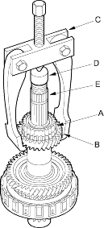

Shafts and Clutches
|
14-196 |
|
Remove the reverse selector hub (A) and the 4th gear (B) with a universal 2-jaw (or 3-jaw) puller (C). Place a shaft protector (D) between the puller and countershaft (E) to prevent countershaft damage.
 |